독일은 우리나라와 8시간의 시차가 있다. 독일에서 아침 6시라면 우리나라는 오후 2시다. 그래서 H는 피로함에도 불구하고 아침 여섯 시부터 깨서 잠을 제대로 못 잤다고 했다. 나는 반대로, 피로함 때문에 시차에도 불구하고 오전 9시까지 중간에 깨지도 않고 늘어지게 잤다. H가 나에게 가장 부러워하는 요소 중 하나가 잠인데, 이번 여행에서도 어김없었다.
이 날은 드디어 그 유명한 옥토버페스트를 즐기는 날이다. 우리는 나가기 전에 빨래부터 돌렸다. 이번 여행은 기간이 길어서 기회가 있을 때마다 빨래를 돌려놓아야 했고, Schwan Locke의 빨래는 무료라서 놓칠 수 없었다. 리셉션에서 무료로 주는 세제를 받고 지하의 빨래방으로 내려갔다. 한 기계에서 세탁과 건조가 모두 가능한 일체형 세탁건조기를 돌리고 보니 소요시간 3.5시간이 떴다. 시간이 생각보다 오래 걸려서, 그 동안 나가서 한잔 마시고 오기로 했다. 금품도 아니고 남이 입던 세탁물을 누가 가져가진 않겠지.
축제가 벌어지는 Theresienwiese 공원 바로 옆에는 쇼핑센터? 복합문화공간? 같은 큰 건물이 하나 있었다. 우리는 축제장에 들어가기 전에 유심칩을 먼저 사기로 해서 이 쇼핑센터로 갔는데, 아직 정오도 안 됐는데도 불구하고 전통 의상을 차려입은 사람들이 진을 치고 있었다. 사람들이 걸어오는 방향을 통해 어느 쪽에 지하철 역이 있는지 유추할 수 있을 정도였다. 워낙 세계적으로 유명한 축제라서 그런지 유럽인이 아닌 사람들도 많이 보였고, 다들 전통 의상을 입고 있었다. 축제장 근처에 전통 의상을 대여해 주는 가게가 많아서 우리도 마음만 먹으면 입을 수 있었겠지만, 거기까지는 시도하지 않았다. 왠지 우리의 왜소한 피지컬과는 어울리지 않을 것 같았달까…
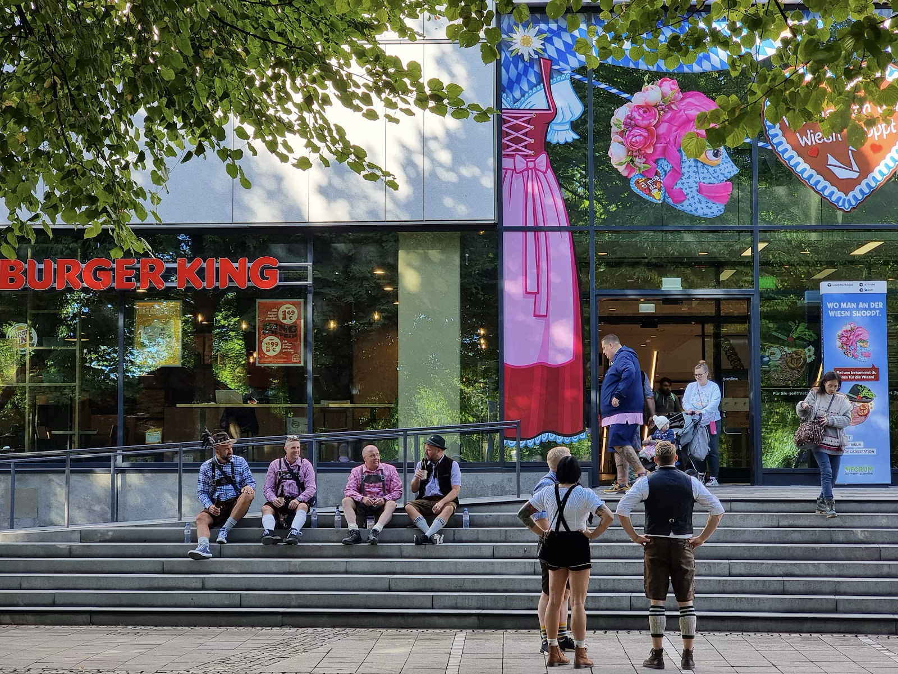
Vodafone에서 유심칩을 구매했다. 유럽 문화 때문인지 몰라도, 직원은 에어팟을 뺄 생각도 하지 않고 세월아 네월아 하며 우리의 유심칩을 갈아 끼워줬다. 딱히 말투나 제스처가 친절하지도 않았다. 내가 성격이 급한 편은 아니지만 그래도 어쩔 수 없는 한국인인지 솔직히 조금 답답했지만, 결과적으로 잘못된 것은 없었기에 조용히 나왔다. 개통도 잘 됐고, 아무 문제 없었다. 12.9유로에 하루 3GB… 조금 적은가 싶었지만 우리가 데이터 쓸 일이 뭐 얼마나 있겠나 싶었다. 다른 선택지가 있었던 것도 아니고.
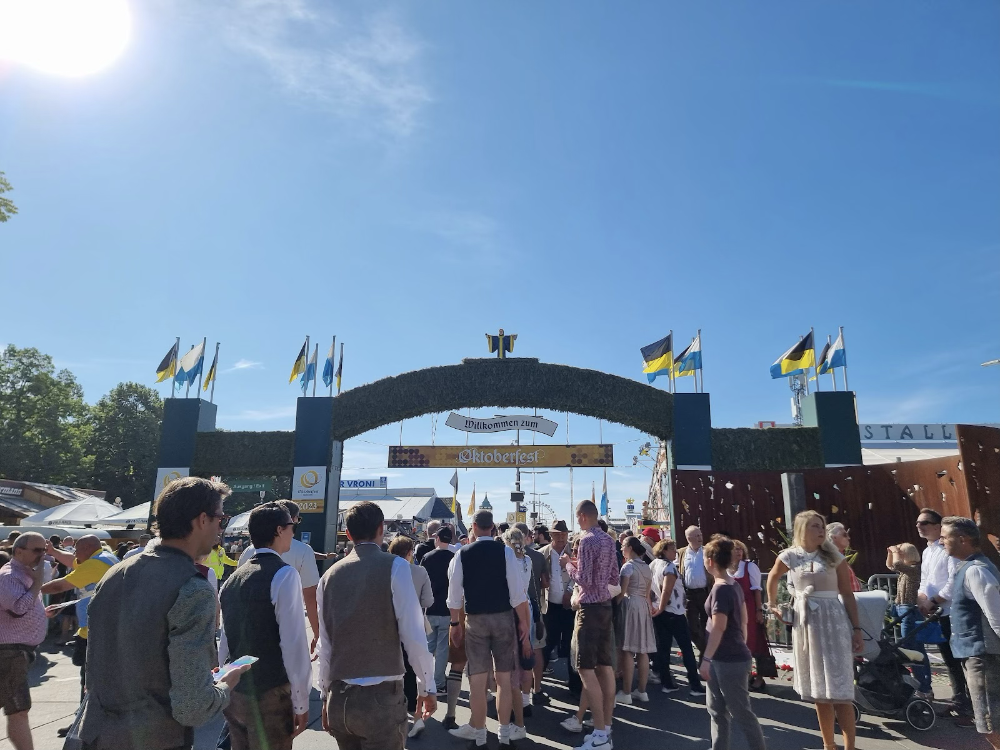
날씨는 우리 편이었다. 옥토버페스트는 광란의 축제지만 이른 아침부터 오픈하는 것은 아니고, 오전 열 시가 되어야 문을 연다. 오픈 시간이 되면 사람들이 입구에 잔뜩 몰려드는데, 거대한 덩치의 서양인들 사이에 낑기니 굉장히 무력해진 느낌이 들었다. 얘네들은 뭘 먹고 이렇게 크냐. 나보다 어려 보이는 애들도 많던데…
우리가 입구에서 기다릴 때, 뮌헨의 메이저 브루어리 중 하나인 호프브로이하우스에서 맥주를 운송하는 수레가 도착해서 잠시 길을 열었다. 트럭이 아니고 진짜 말이 끄는 수레 위에 맥주가 담긴 것으로 추정되는 나무 통이 잔뜩 실려 있었다. 축제의 역사가 길어서 옛날 관습을 유지하고 있는 게 아닐까. 관광객 입장에서도 신기한 구경거리였다. 새까만 말들은 덩치가 크고 근육질이었고, 마구나 발굽은 깨끗한 스테인리스라서 햇빛을 받아 반짝거렸다. 마부는 능숙하게 말을 몰아 축제장 안으로 들어갔고, 곧 입구가 열리면서 우리도 수레를 따라 축제장 안으로 들어갔다. 입구에 일렬로 늘어선 직원들이 입장객들의 소지품을 검사했다. 조사해 보니 옛날 축제장에서 테러가 벌어진 적이 있어서 그 이후로 생긴 규칙이라고 한다. 우리는 작은 슬링백을 하나씩 메고 있었는데, 하필 H의 가방 지퍼가 걸리는 바람에 내가 검사를 다 끝낼 때까지도 가방을 열지 못했다. 보다 못한 직원이 대충 들여보내 줬다.
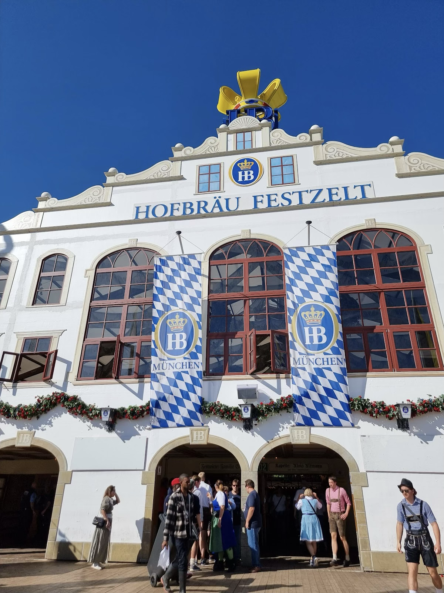
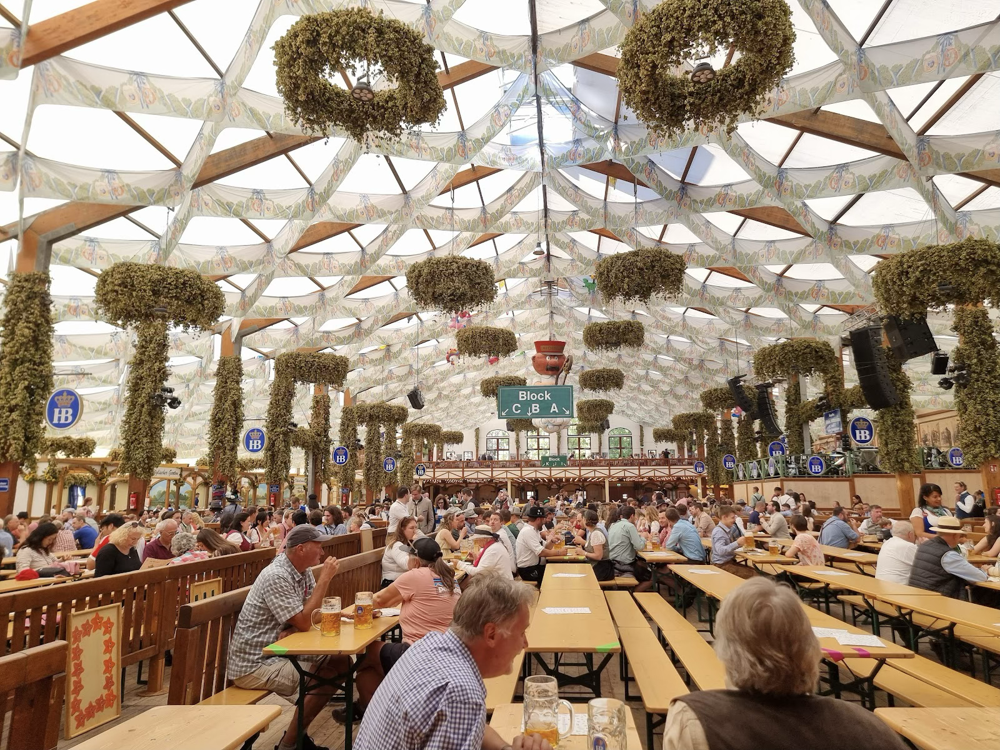
옥토버페스트에는 수많은 브루어리들이 텐트를 치지만, 그 중 가장 크고 유명한 여섯 개의 대기업이 있다. 호프브로이, 하커-프쇼르, 아우구스티너, 슈파텐브로이, 뢰벤브로이, 파울라너다. 우리는 둘 다 독일에 와 본 적이 있는데, 나는 십 년 전 교환학생으로 왔을 때 뮌헨 시내의 호프브로이하우스에서 술을 마신 기억이 있고 다른 브루어리는 경험이 없었다. H는 5년 전 옥토버페스트에 놀러 왔었는데, 그 때에는 아우구스티너가 가장 맛있었다고 했다. 축제장에 들어서서 인증샷을 찍으며 걷다 보니 아까 들어간 호프브로이 수레와 말이 보였다. 호프브로이 텐트가 입구와 가장 가까웠던 모양이다.
우리는 호프브로이에 먼저 들어갔다. 금방 사람들이 들어찰 테니 최대한 빨리 자리를 잡자는 생각도 있었는데, 사실 그 생각은 기우였다. 아무리 옥토버페스트라도 정오에 만석이 되지는 않는 것 같다. 예약된 자리를 제외하고서도 아직 빈 자리가 많았다. 직원들도 여유롭게 천천히 돌아다니면서 주문을 받았다. 우리는 적당한 테이블에 자리를 잡고 맥주와 슈니첼을 주문했다. 아마 나는 슈니첼을 먹어 본 것도 이 때가 처음이었던 것 같은데, 얇은 돈까스 같아서 맛있었다. 감자 샐러드가 같이 나왔는데, 뭘 넣었는지 몰라도 새콤한 게 이것도 아주 맛있었다. 나중에 H는 이 감자 샐러드가 독일에서 먹은 음식 중 제일 맛있었다고 했다.
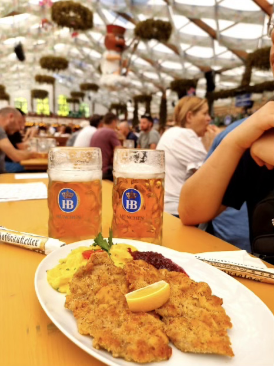
우리는 용감하게도, 메이저 브루어리 여섯 개를 다 돌자는 목표가 있었기 때문에 호프브로이에서는 한 잔씩만 마셨다. 한 잔이라고 해도 용량이 1L이니 슈니첼을 다 먹기엔 차고 넘치는 양이었다. 호프브로이 주변을 돌아보니 하커-프쇼르 텐트가 있어서 여기로 들어갔는데, 호프브로이보다 텐트도 더 크고 내부 디자인도 예뻤다. 아까보다 시간이 좀 지나서 빈 테이블은 없었고, 우리는 왠지 분위기가 싸해 보이는 한 유럽인 커플이 앉아 있던 테이블 옆에 앉았다. 싸웠거나 싸우는 중인 것 같았다.
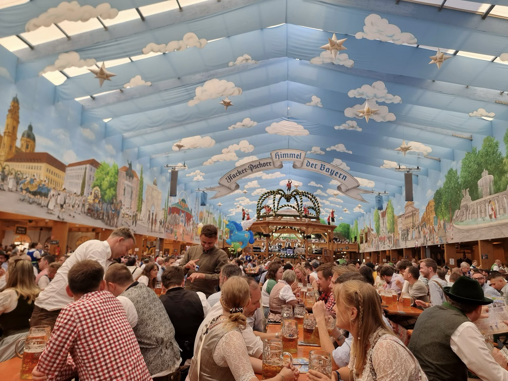
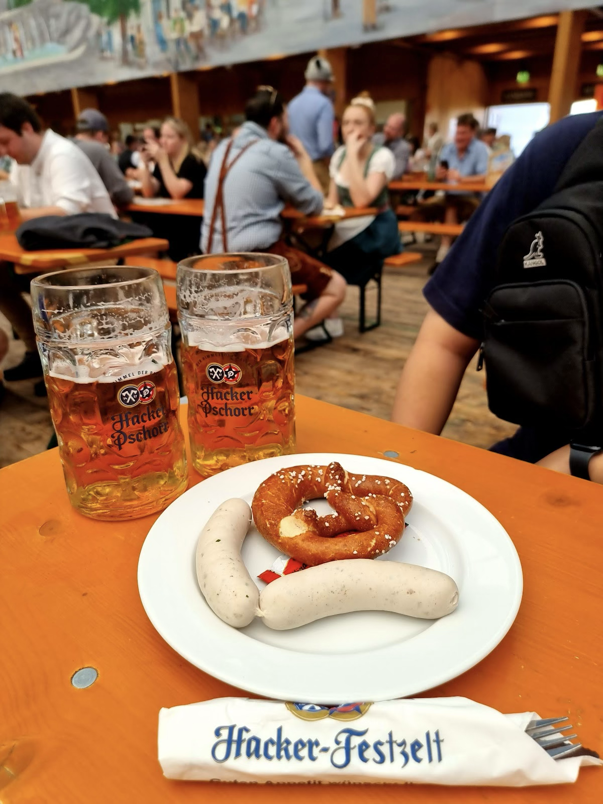
이번에도 맥주를 한 잔씩 시키고 안주는 프레첼과 바이스부르스트를 주문했다. 내가 십 년 전에 호프브로이하우스에서 먹었던 게 바이스부르스트인데, 그 때에는 분명 작은 항아리 안에 따뜻한 물에 담긴 채로 나왔었다. 이번에는 프레첼과 같이 접시에 얹어져 나왔는데, 맛은 기억보다 더 좋았다. 그 땐 그냥 심심하다고 생각했던 것 같은데… 어쩌면 같이 나온 새콤달콤한 소스에 찍어먹어서 그런지도 모르겠다. 맥주는 하커-프쇼르보다 호프브로이가 조금 더 맛있었던 것 같다.
맥주를 다 마시니 오후 두 시가 되어가고 있었다. 옥토버페스트에 공급되는 생맥주는 일반 맥주보다 조금 도수가 높다. 우리는 그걸 2L씩 마셨고, H는 잠을 제대로 못 잔 여파가 겹쳐 조금씩 힘들어하기 시작했다. 슬슬 세탁도 끝났을 시간이라 계산을 하고 나는 화장실에 들렀는데, H는 그 사이에 5년 전 옥토버페스트에서 본인에게 서빙을 해 주었던 직원이 여전히 같은 텐트에서 서빙을 하는 걸 보고 함께 인증샷을 찍었다. 5년 전에도 H의 사진에 찍혀 있던 직원들이 같이 나이를 먹고 새 사진에 찍힌 걸 보니 확실히 셋 다 나이를 먹은 게 티가 났다. H의 말로는 그 직원들이 당연히 H를 알아보지는 못했지만, 같이 찍은 사진을 보여주니 놀라워하며 본인 핸드폰으로 5년 전 사진을 찍고는 “We’re old and stressed”라고 했다고 한다.
1차전을 이렇게 마무리하고 알딸딸해진 상태로 숙소에 돌아왔는데, 세탁은 다 되어 있었지만 건조가 안 돼 있었다. 건조를 다시 돌리니 한 시간이 소요된다고 했다. 나는 취기가 올라 그동안 숙소에서 잤고, 한 시간 뒤 H가 건조된 세탁물을 갖고 와서 나를 깨웠다. 우리는 해장을 위해, 근처 한국식품점을 알아보고 김치를 사러 갔다. 다행히 걸어갈 수 있는 거리에 있었다.
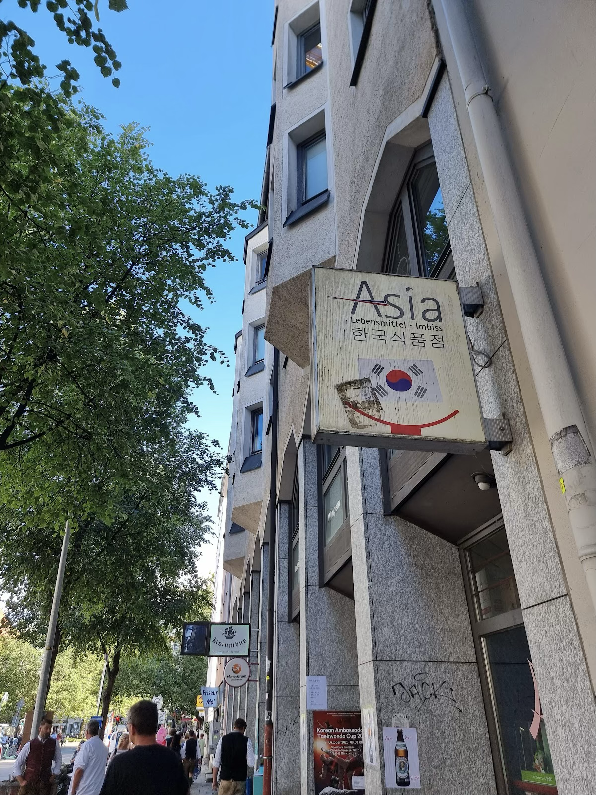
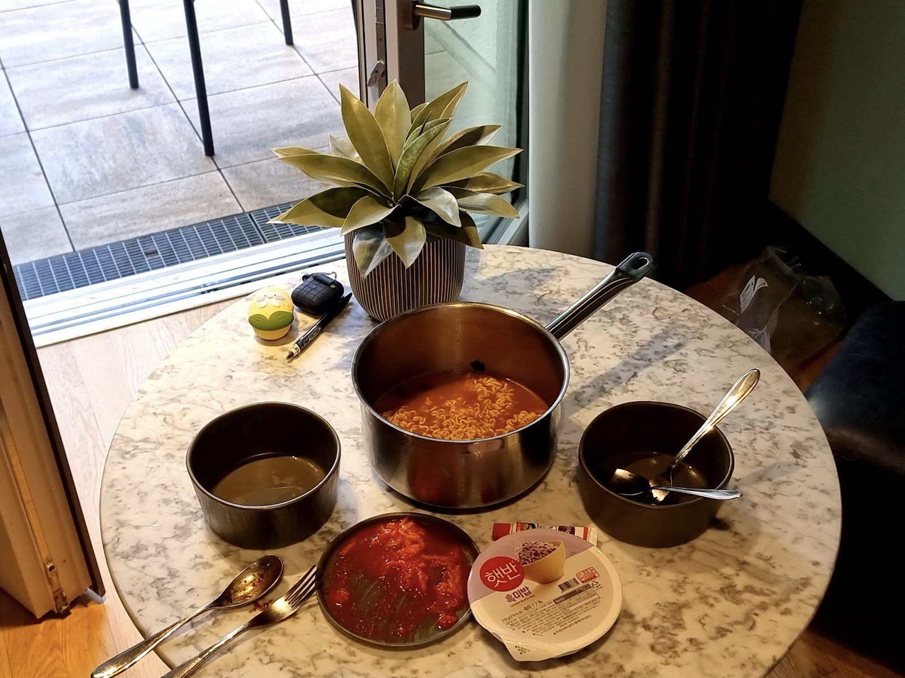
그리고 해장. 사진에는 라면만 나와 있지만, 사실 저 라면 전에 짜파게티를 끓여서 이미 한 그릇씩 해치우고 라면을 다시 끓인 것이다. 여기에 햇반까지 말아서 야무지게 해장을 하고 우리는 다시 잤다. 우리는 먹는 것을 좋아한다. 여행은 먹기 위해서 하는 것이다. 눈을 떴을 때에는 저녁 일곱 시가 다 된 시간이었다. 숙취 때문에 머리가 아팠다.
술을 마시고 나면 수분 보충이 필요해진다. 첫날에 사 둔 물과 음료수로는 부족해서, 우리는 바람 쐴 겸 근처 마트로 향했다. 걸어서 5분 거리에 REWE라는 마트가 있었다. 지하에 있었고 생각보다 규모가 컸다. 첫날 구멍가게에서 산 생수를 훨씬 싼 가격에 팔고 있었다. 우리는 물과 파워에이드, 달달한 커피, 과일주스 등을 넉넉하게 사다가 숙소 냉장고에 쟁여 두고, 늦은 소화를 시킬 겸 뮌헨 올드타운으로 산책을 나갔다. 뮌헨 중앙역, Theresienwiese, 올드 타운과 모두 가까운 Schwan Locke의 입지가 다시 빛을 발했다. H는 역시 난 사람이다.
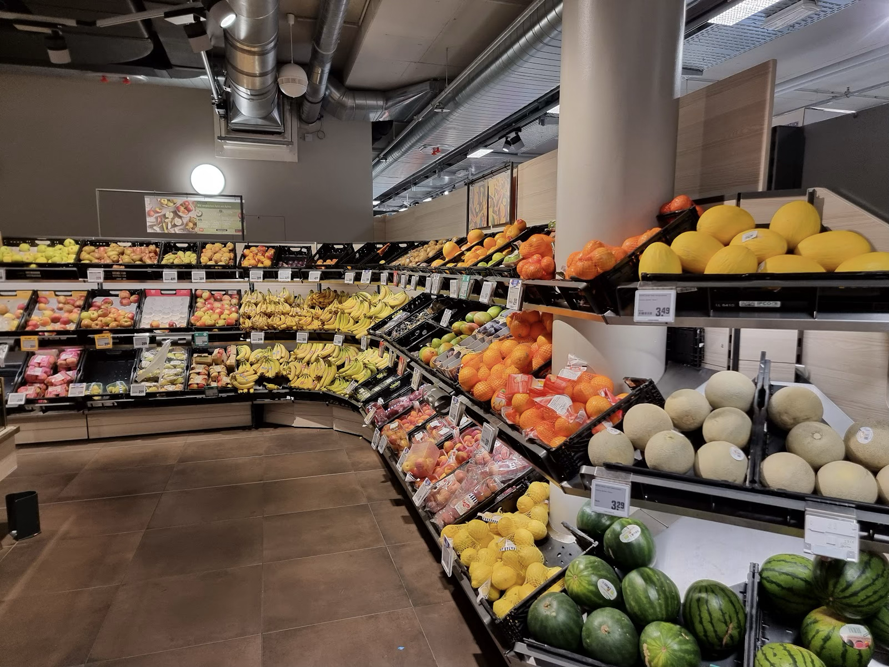
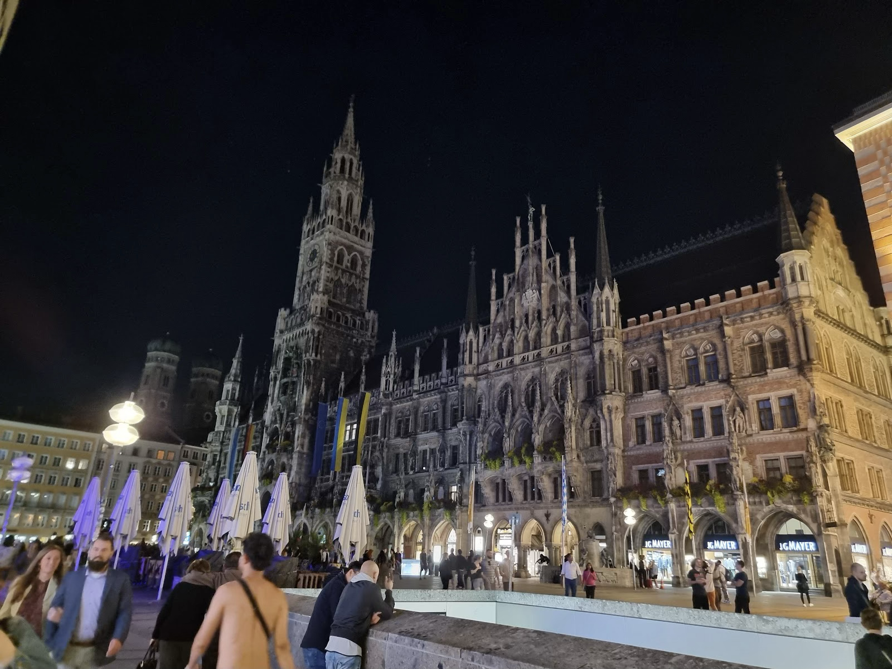
우리는 Karlsplatz를 거쳐 Marienplatz까지 걸어갔다. 꽤 먼 거리를 걸었는데, 옥토버페스트 기간이라 그런지 시내까지도 사람이 바글바글했다. Full-moon이라고 달 사진 찍는 사람도 많았고, 길거리에서 술 마시는 사람, 버스킹 하는 사람, 피아노 치고 노래하는 사람, 구경하는 사람… 밤인데도 밝고 시끄러웠다. 그렇게 먹고 마셨는데 피자가게에서 냄새가 풍기자 맛있겠다는 생각이 들었다. 우리는 어쩔 수 없는 돼지가 분명했다.
Marienplatz를 가로질렀다가 돌아와서 숙소까지 다시 걸어오니 거의 1.5~2시간이 지났다. 숙취가 계속 있어서 걷는 내내 머리가 아팠고, 많이 걷다 보니 발도 아팠지만 그 정도라도 걷지 않으면 체하거나 어디 문제가 생길 게 분명해서 걷기를 잘 했다고 생각했다. 날씨도 좋아서 걷는 데 방해를 받은 일은 없었다. 첫 날에 브루어리 여섯 개 중 두 개를 체크했으니 나쁘지 않다고 생각하면서, 우리는 씻고 사진을 정리하고 잠에 들었다.